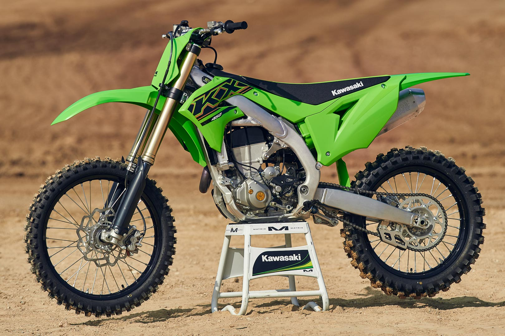

Unlike the Kawasaki KX250F, the KX450F was not co-developed under joint-venture with the Suzuki Motor Co. and differed greatly from Suzuki's 450cc offering. The first year of the KX450F was 2005, but the machine suffered catastrophic frame failure during the Japanese MX season. As a result, plans for a 2005 retail version were postponed and the KX450F debuted as a 2006 model in most markets. Initial reviews of the KX450F were tepid, citing a positive response to the engine and power delivery, but finding the suspension and geometry of the bike unsatisfactory. Reviewers also took exception to the choice of a 4-speed transmission, as Kawasaki chose to break from the industry standard by not to include a fifth gear. Despite these perceived shortcomings, the 2006 Kawasaki KX450F would win both the AMA World Supercross GP title and the BooKoo Arenacross title, as well as the Hare and Hound title. For 2007, the KX450F received a series of minor engine and frame refinements, but the most notable upgrade was a 5-speed transmission. The transmission received a slightly taller 1st gear, while second through fourth remained the same and the fifth added.
